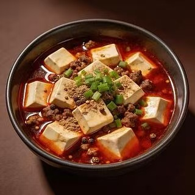
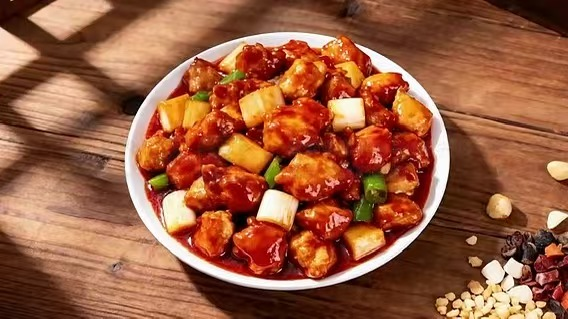
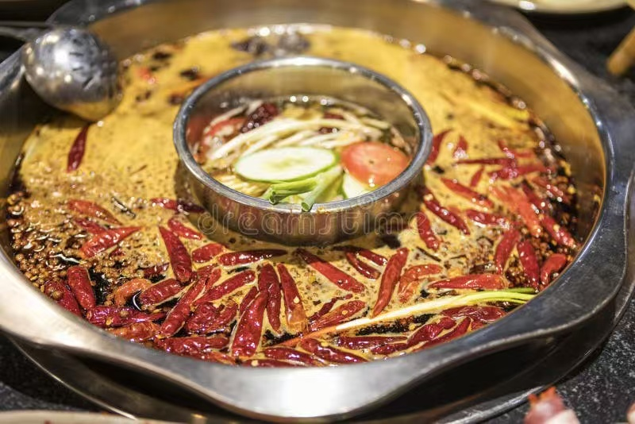
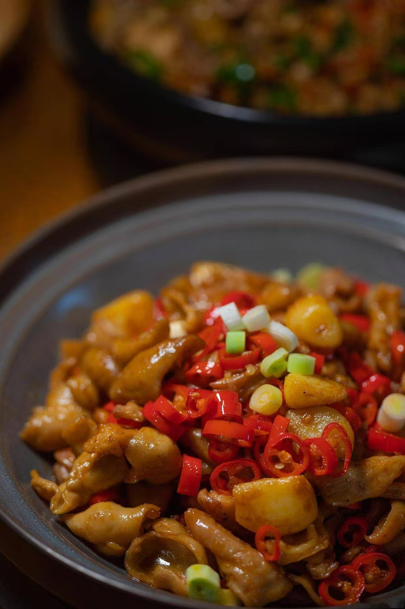
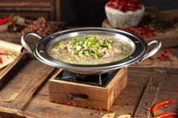
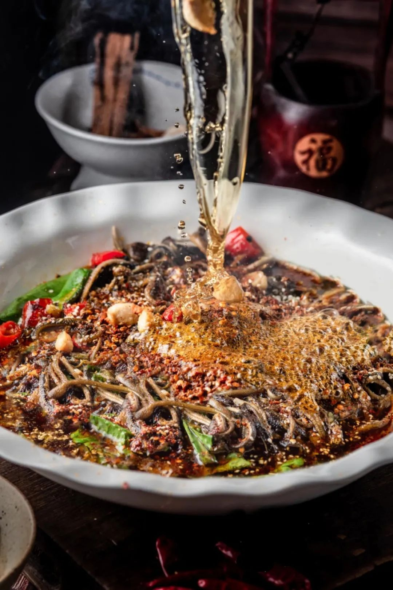
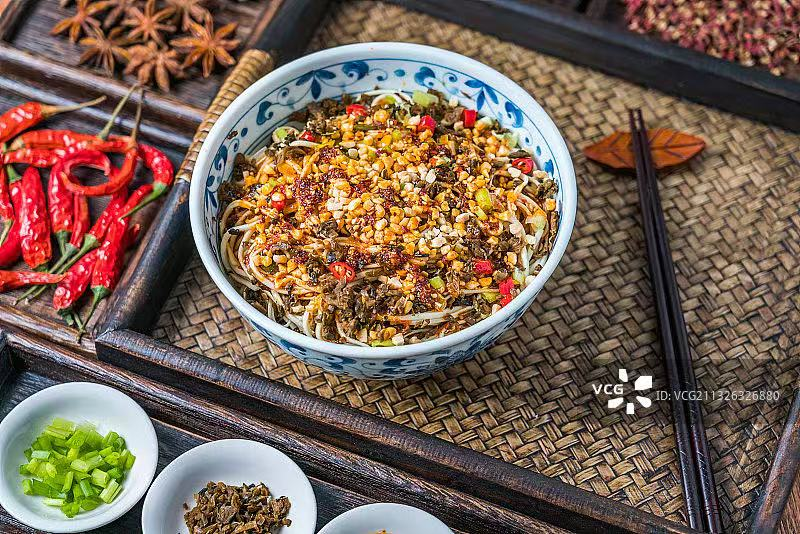
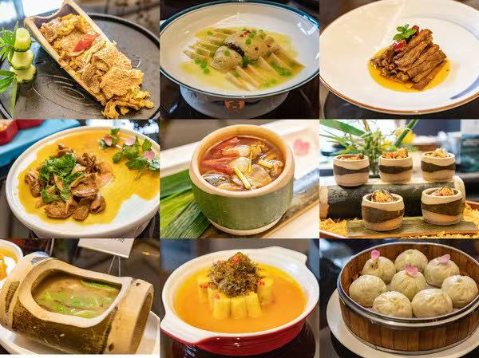
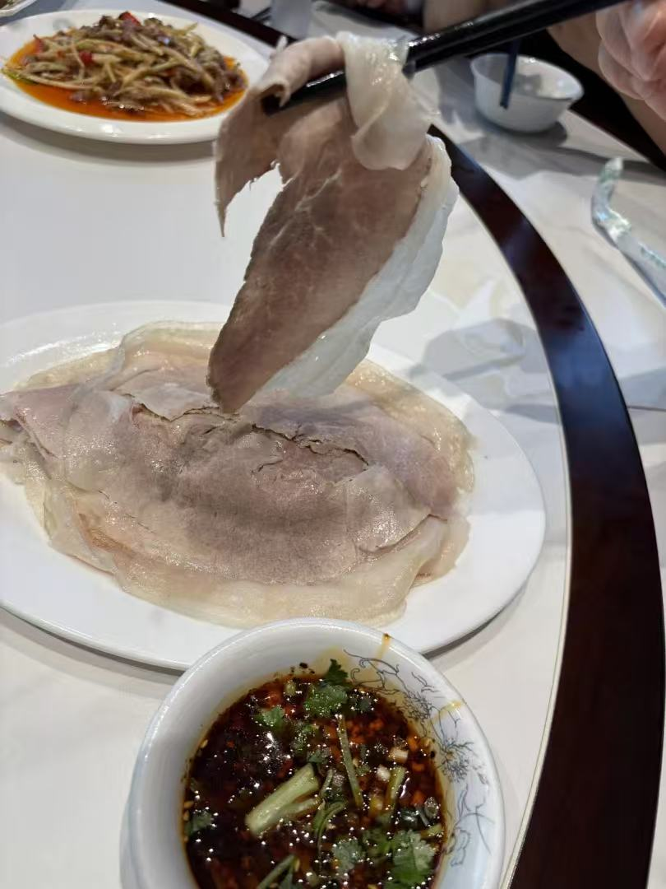

Sichuan Cuisine — Regional Food Guide
A comprehensive guide to the authentic flavors, signature dishes, and culinary traditions of Sichuan.
Signature Dishes of Sichuan

Mapo Tofu
Silken tofu simmered in a rich, fiery sauce of fermented broad beans, chili oil, and Sichuan peppercorns. Invented in the late Qing Dynasty by Chen Ma

Kung Pao Chicken
Diced chicken stir-fried with peanuts, dried red chilies, and scallions in a sweet-savory sauce. Named after Ding Baozhen, a Qing Dynasty official who

Sichuan Hotpot
A communal dining experience centered around a pot of simmering, chili-laced broth. Diners cook raw ingredients tableside — from thin-sliced beef to t

Jiangyou Braised Pork Intestine
A legendary Sichuan dish from Jiangyou County, featuring pork intestines braised to tender perfection in a rich, spicy sauce. Chewy, bold, and definit

Leshan Sweet Glazed Duck (Tianpi Ya)
A whole duck brined with Sichuan spices, air-dried, brushed with maltose syrup, then deep-fried until the skin transforms into a glossy, caramelized a

Bobo Chicken
Cold skewers of chicken, tripe, duck tongue, lotus root, and vegetables steeped in a chilled broth of chili oil, Sichuan pepper, sesame, and aromatics

Leshan Qiaojiao Beef (Crossed-Leg Beef Soup)
A soul-warming beef offal soup simmered with over 30 Chinese medicinal herbs. Clear golden broth, tender sliced beef and tripe, with a subtle aromatic

Linjiang Shredded Eel
Fresh稻田 eels from Leshan's rice paddies, skillfully deboned with an ox-bone knife into perfect shreds, then quick-fried in pork fat with pickled chili

Yibin Burning Noodles (Ran Mian)
The soul of Yibin's breakfast culture — alkaline wheat noodles boiled to al dente, drained, then tossed in a secret chili oil blend, aged vinegar, and

Full Bamboo Banquet (Quan Zhu Yan)
A magnificent feast drawn entirely from bamboo — a culinary tradition unique to southern Sichuan. Every part of the bamboo plant is transformed into a

Lizhuang White Pork (Lizhuang Bai Rou)
The pride of Lizhuang Ancient Town — impossibly thin slices of boiled pork, each spanning an entire plate, so translucent you can read newsprint throu
Food Culture of Sichuan
The cuisine of Sichuan reflects its geography, climate, and rich cultural heritage. Local ingredients, traditional cooking methods, and centuries of culinary evolution have created a distinctive food culture that is recognized throughout China and the world.